My Projects
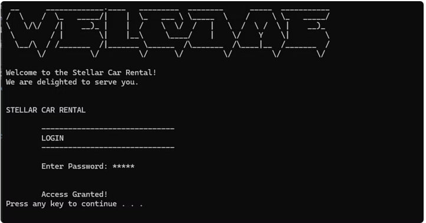
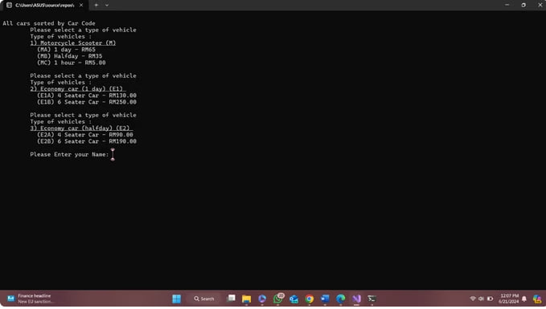
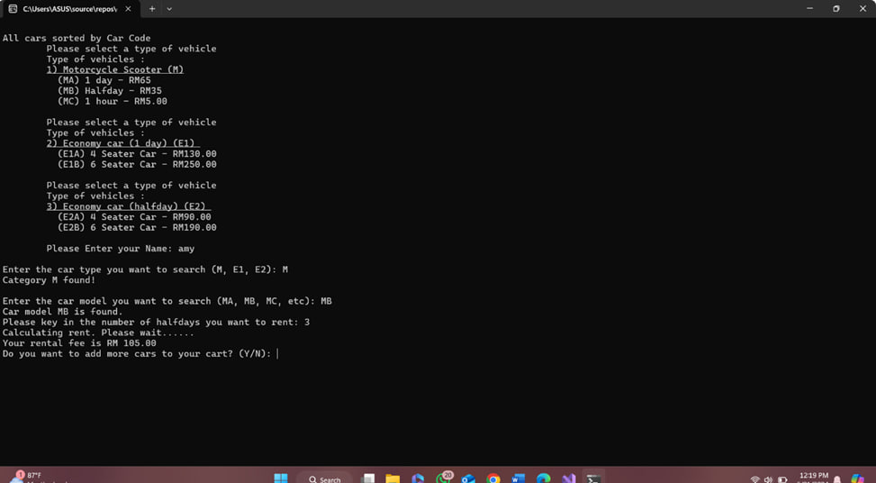

STELLAR CAR RENTAL SYSTEM
(Mini Project
for
Data Structure and Algorithm)
Key features of the Car Rental System include user-friendly interfaces for customers and administrators, secure data management for vehicle records and customer information, real-time availability updates, and integrated payment processing capabilities. By leveraging object-oriented programming principles and data structures, the system ensures scalability and maintainability, accommodating future expansions and enhancements.
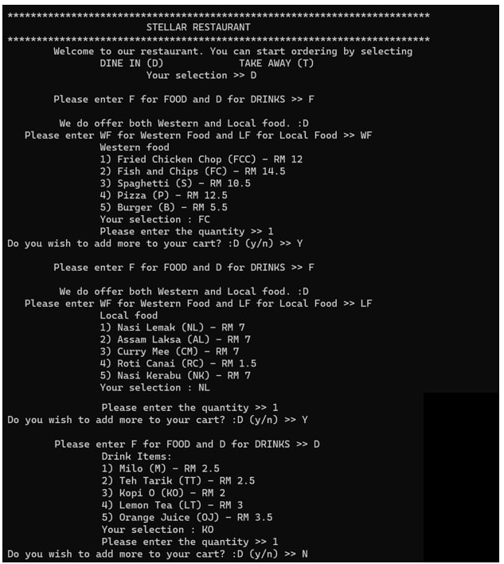
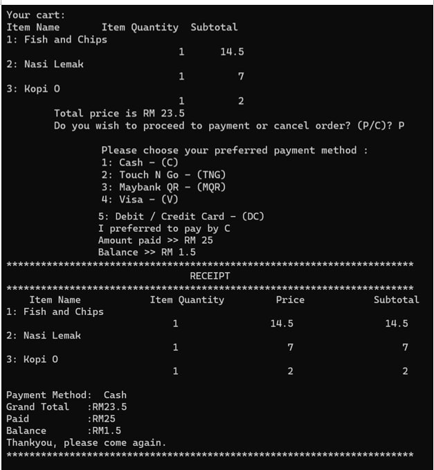
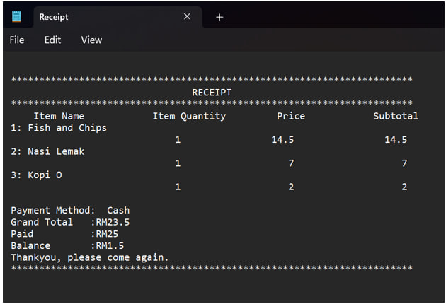
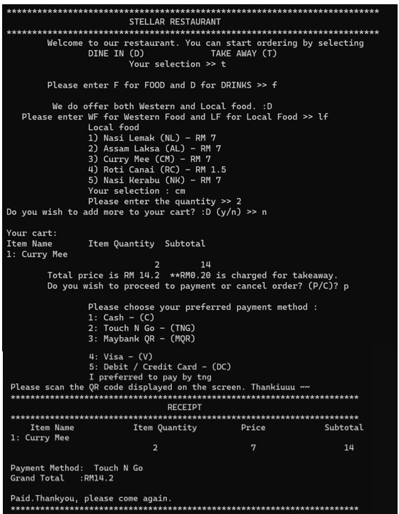
STELLAR RESTAURANT SYSTEM
(Mini Project for
Programming Technique)
This Self-Service Food Ordering System significantly improves the efficiency and accuracy of the order-taking process in the food ordering system. It reduces the time required to place an order, eliminating the need for customers to wait for service in the restaurant. Additionally, the program addresses potential barriers to ordering, such as embarrassment or anxiety, by allowing customers to place orders without face-to-face interaction. Language barriers, mispronunciations, and order errors are also mitigated.
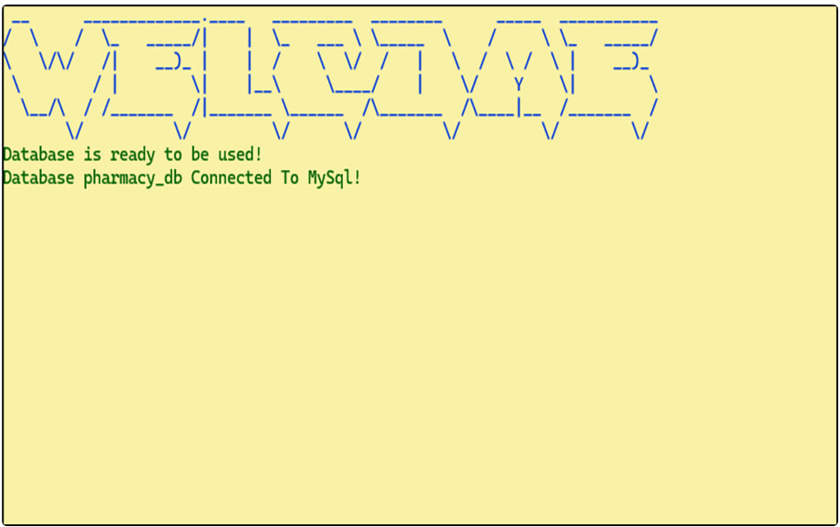
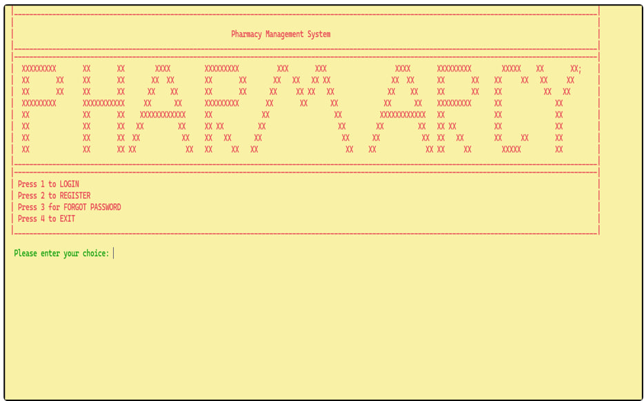
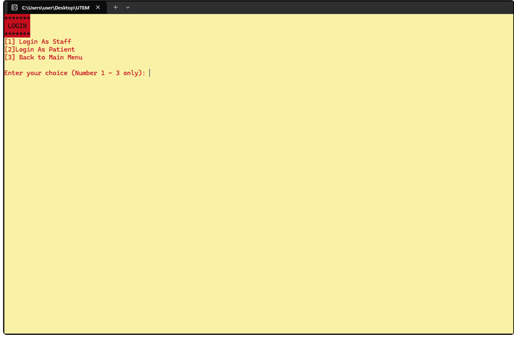
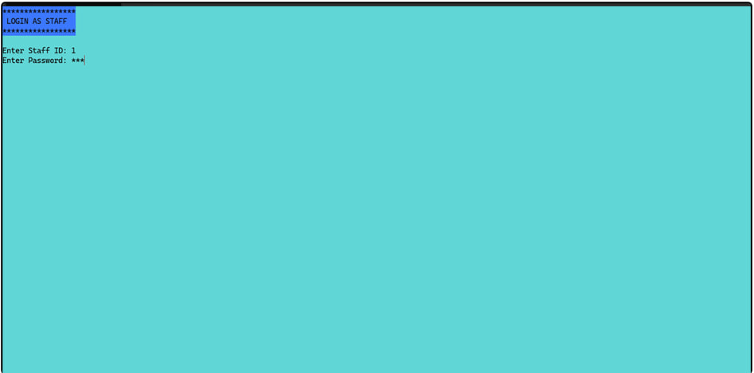
Workshop 1 Using C++
Pharmacies play a vital role in ensuring patients receive the right medications promptly and accurately. However, manual handling of prescriptions, stock management, and billing processes often lead to inefficiencies, delays, and errors. To address these challenges, this project proposes the development of an automated Pharmacy Management System designed to streamline pharmacy operations, enhance accuracy, and improve overall service delivery.
The system will integrate key modules such as Authentication and Validation (user login, registration, and password recovery), User Profile Management (for both staff and patients), Medication and Prescription Management (to handle inventory and prescription records), and Report Generation (for monitoring prescriptions, medication history, and inventory levels).
By automating these processes, the Pharmacy Management System aims to minimize human error, optimize stock control, and ensure efficient, reliable, and customer-centered pharmacy operations.
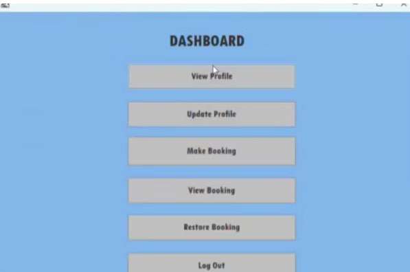
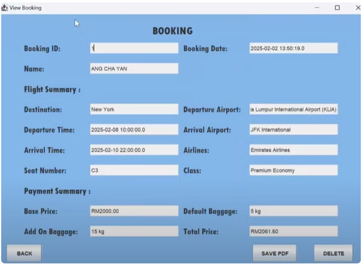
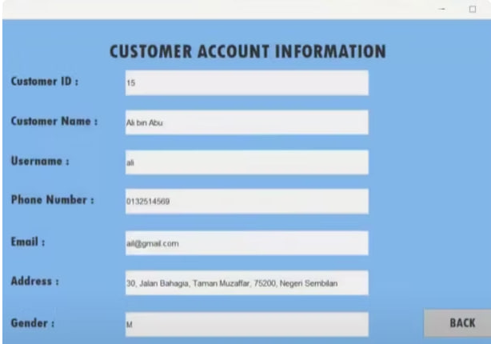
Airline Reservation System
(Mini Project for Object Oriented
Programming)
(Mini Project for
Object Oriented Programming)
The Airline Reservation System is designed to provide customers with a convenient and efficient way to manage their flight bookings online. Through this system, users can easily make flight reservations, view and update their personal profiles, and manage their existing bookings.
In addition, the system includes a booking restoration feature, allowing customers to restore deleted bookings within 3 days if needed. After the 3-day grace period, any un-restored booking will be permanently deleted from the system to maintain data accuracy and efficiency. After booking for the seat, they will get a booking ticket afterwards which is stored as a pdf.


Intelligent Attendance Evaluation System
(Mini Project for
AI)
The Intelligent Attendance Evaluation System (IAES) is an advanced AI-powered solution designed to replace traditional attendance methods with a more accurate, efficient, and scalable approach. By leveraging facial recognition technology, the system automates attendance tracking, ensuring instant and precise record-keeping while preventing fraudulent activities through biometric verification.
IAES significantly reduces administrative workload and minimizes manual errors, allowing institutions to manage attendance effortlessly. Furthermore, the system supports scalability by enabling easy addition of new students and integrates seamlessly with existing platforms, offering smooth data export for analysis and reporting.
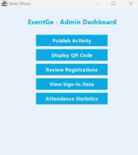
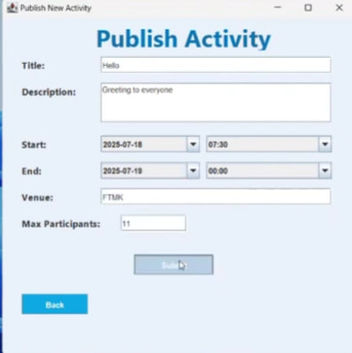
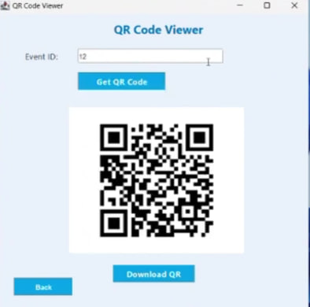
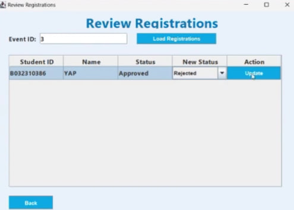
EventGo Project
(Mini Project for
distributed application development)
The EventGo application is a desktop-based event management and attendance tracking system designed to support the end-to-end process of organizing, managing, and monitoring events. Developed using Java Swing within the Eclipse IDE, the application provides a graphical user interface (GUI) for both administrators and users to interact with the system. It integrates with Firebase Authentication for secure login access and utilizes MySQL or Firebase Firestore for backend data storage, ensuring a reliable and scalable architecture. The system is structured to manage six key business processes: event creation, user registration, registration review, QR code generation, on-site check-in, and attendance reporting. Admin users can log in via Firebase and access an interface to perform full CRUD operations on events. This allows them to create, edit, view, and delete event information directly through the application, ensuring flexible event management capabilities. Users can register for events using a built-in form, which captures and stores their registration with an initial status of "Pending Approval". This registration data is stored in the backend and awaits review by a designated reviewer or administrator. The review process enables authorized personnel to assess registrations and approve or reject them based on predefined criteria. The user-friendly interface streamlines this process and updates the registration status accordingly. For registrations that are approved, the system automatically generates a QR Code using the ZXing library. This QR code encodes the unique combination of userId and eventId, serving as a digital ticket for event check-in. The code is displayed on the confirmation screen or made available for download, enabling seamless check-in at the event venue. During on-site check-in, staff members can scan QR codes using a webcam or scanning tool integrated into the system. The scanned code is matched against the backend records to validate the registration, and the system then records the check-in time. This process ensures accurate attendance tracking and prevents unauthorized access to the event. Finally, the EventGo application supports real-time attendance monitoring and reporting. Administrators can generate statistics such as total registrants, actual attendance count, and event attendance rates. Reports can be exported in CSV or JSON formats, offering flexibility for analysis or archival purposes. Overall, EventGo provides a robust and efficient solution for event administration, user participation, and data-driven decision-making.
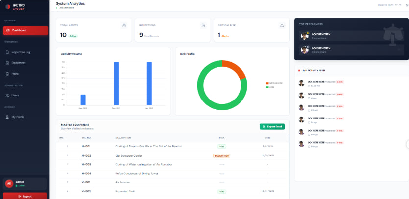
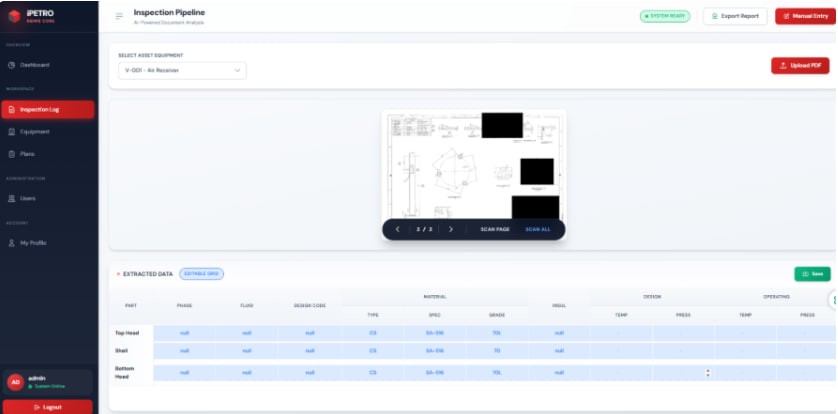
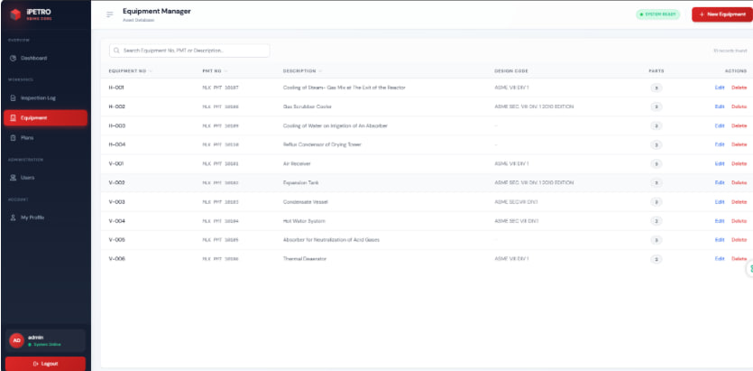
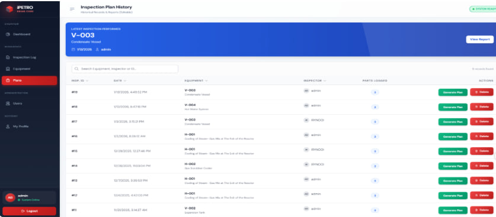
iPetro- Risk-Based Inspection Management System (RBIMS)
(Workshop 2)
iPetro (RBIMS) is a web-based Risk-Based Inspection (RBI) Management System designed to support industrial inspection workflows.
The system enables organizations to manage equipment inventories, inspection plans, inspection results, and user profiles in a centralized platform.
RBIMS also integrates AI-assisted data extraction to automate the interpretation of technical drawings, reducing manual data entry and improving inspection efficiency.


Food Allergen Predictor app
(Mini Project for
AI)
The Food Allergen Predictor is a mobile application developed for Android devices to evaluate and benchmark the performance of various artificial intelligence models in predicting food allergens. Designed as a comprehensive testing environment, the app allows users to select specific AI models and datasets to perform individual or batch predictions on food items based on their ingredient lists. Beyond simple prediction, the core functionality revolves around detailed performance analysis, offering dashboards that track prediction quality metrics like precision, recall, and F1-scores. It also rigorously evaluates model reliability through safety metrics—such as hallucination and over-prediction rates—and measures on-device efficiency by monitoring latency, token throughput, and memory usage during execution. To support ongoing research and documentation, the application maintains a detailed history of all predictions and provides tools to export these benchmark reports and historical records as CSV files for external analysis
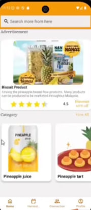
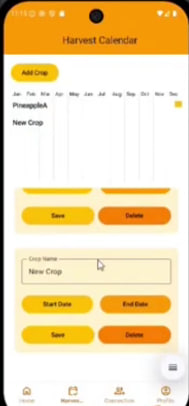
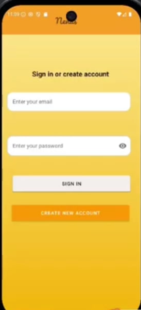
Nenas App
(Mini Project for
Software Project Management )
The Nenas App is a dedicated digital platform designed to support pineapple farmers in managing their farming activities more efficiently while fostering a strong agricultural community. Built with the needs of modern farmers in mind, the application combines essential farm management tools with social connectivity features, enabling users to streamline daily operations and improve productivity.
Through a simple login and registration system, farmers can easily access the platform and create personalized accounts. Once registered, users are able to manage their profiles by updating key personal information such as name, role, contact details, and address. The app also allows farmers to view both their own profiles and those of other farmers, encouraging transparency and collaboration within the community.
A key feature of the Nenas App is the Harvest Calendar, which helps farmers plan and track their pineapple harvest cycles. By recording expected harvest dates, farmers can better organize their schedules, anticipate yields, and make informed decisions regarding production and sales.
In addition, the Community/Connection feature provides a space where pineapple farmers can interact, share knowledge, and support one another. This strengthens relationships among farmers and promotes the exchange of best practices and farming insights.
The app also includes display and browsing functions that allow users to view product-related information, making it easier to stay informed about available produce and farming updates.
Overall, the Nenas App serves as an integrated solution that not only enhances farm management but also builds a connected and knowledgeable pineapple farming community.
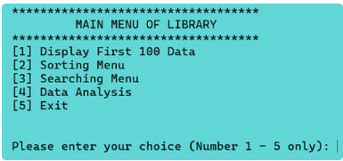
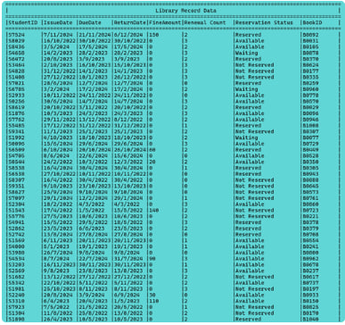
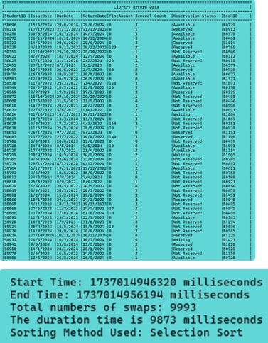
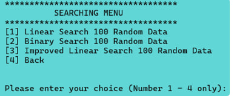
Library Management System
(Mini Project for
Algorithm Analysis)
The Library Management System serves to grant an efficient approach to record management. This software is meant to automate the whole library workflow including book approvals, tracking borrowed books, calculating fines, and managing book reservations. It uses digital processes instead of traditional ones, thus reducing errors, saving time, and increasing the overall performance of library operations.
First and foremost, this project deals with the execution of basic LMS features such as managing and searching through book records, sorting through student data, and creating analytical reports. This system can handle large data efficiently, processing 10,000 records based on C++. For sorting data on attributes such as StudentID and FineAmount, two sorting algorithms-Selection Sort and Merge Sort-have been implemented. Similarly, to assess their operational performances and operation counts, two search algorithms-linear search and binary search-have been implemented and analyzed. Comparisons should therefore serve best to crystallize their analytical competence for the purpose of scenario illustration.
Besides that, the Library Management System includes advanced features like fine analysis, reservation summaries, and renewal statistics in place of sorting and searching. While reservation and renewal summaries give information on consumption patterns that can be improved in service provision, fine analysis helps to easily identify and clear overdue accounts by librarians. It is this property that makes the Library Management System an important agent of organizational development that now caters beyond just simple data management.
Finally, the system with such a menu-driven interface ensures friendly operation with ease of access to various features. MultiLevel architecture also permits flexibility, since future enhancements may include functionalities such as online database backend integration or digital resource management. In addition, algorithmic efficiency gains important insight through the inclusion of performance analysis, making it a worthwhile academic endeavour in algorithm analysis and programming. Ultimately, the Library Management System serves to illustrate how software tools can change operations in the library by bridging the gap between general library management techniques and modern technological innovations.